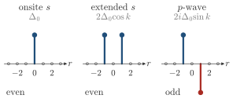
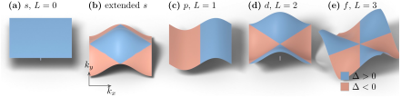

Advanced Quantum Materials 2027 · All lectures · Lecture notes
Session 5. Superconductivity, Nambu Representation and Majorana Physics
5.11 The general pairing Hamiltonian and its symmetry classification
Up to now \(\Delta\) has been a single number. In general the pairing order can depend on momentum and have a spin structure, \(\Delta_{\mathbf k,\sigma_1\sigma_2}\) with \(\sigma_1,\sigma_2 \in \{\uparrow,\downarrow\}\). We can write it in a compact way as the \(2\times 2\) pairing matrix \(\Delta_{\mathbf k} = \begin{pmatrix}\Delta_{\mathbf k,\uparrow\uparrow} & \Delta_{\mathbf k,\uparrow\downarrow}\\ \Delta_{\mathbf k,\downarrow\uparrow} & \Delta_{\mathbf k,\downarrow\downarrow}\end{pmatrix}\), and it is built from a general mean-field Hamiltonian
\[H_{\text{pair}} = -\frac{1}{2}\sum_{\mathbf k}{}^{\prime}\, \sum_{\sigma_1\sigma_2} \left[\Delta_{\mathbf k,\sigma_1\sigma_2}\, c_{\mathbf k\sigma_1}^\dagger c_{-\mathbf k\sigma_2}^\dagger + \Delta_{\mathbf k,\sigma_1\sigma_2}^*\, c_{-\mathbf k\sigma_2} c_{\mathbf k\sigma_1}\right]. \tag{5.10}\]
The real-space and reciprocal-space pictures of \(\Delta\) are related by a Fourier transform. So we can also think of this order in terms of the pair wave function, as a function of the distance between the two paired electrons. The key step is to classify superconducting order only by the symmetry of \(\Delta_{\sigma\sigma'}(\mathbf k)\). This symmetry alone controls how the superconductor responds to perturbations, such as disorder or magnetic fields, independently of the microscopic details.
Fermionic antisymmetry, which comes from the fact that the operators \(c_{\mathbf k\sigma}^\dagger c_{-\mathbf k\sigma'}^\dagger\) anticommute, imposes
\[\Delta_{\sigma\sigma'}(\mathbf k) = -\Delta_{\sigma'\sigma}(-\mathbf k), \tag{5.11}\]
which is a minus sign under the combined operation of exchanging the spin indices and sending \(\mathbf k \to -\mathbf k\). This combined statement holds for any type of pairing. The classification that has a physical meaning comes from splitting \(\Delta_{\sigma\sigma'}(\mathbf k)\) into a part that is symmetric and a part that is antisymmetric under spin exchange alone. Because of (5.11), this is the same as splitting it by its parity under \(\mathbf k \to -\mathbf k\) alone,
\[\textbf{Spin singlet (even parity):} \quad \Delta(\mathbf k) = \Delta(-\mathbf k), \qquad \Delta_{\sigma\sigma'} = -\Delta_{\sigma'\sigma}\ \text{(spin-antisymmetric)},\]
\[\textbf{Spin triplet (odd parity):} \quad \Delta(\mathbf k) = -\Delta(-\mathbf k), \qquad \Delta_{\sigma\sigma'} = +\Delta_{\sigma'\sigma}\ \text{(spin-symmetric)}. \tag{5.12}\]

For concreteness, onsite s-wave pairing, with \(\Delta(\mathbf k) = \Delta\) constant, which comes from a local attractive interaction as in Section 5.5, is even in \(\mathbf k\), and so it is spin-singlet. This symmetry classification has a direct physical consequence. A spin-singlet superconductor is essentially insensitive to non-magnetic disorder, which is called Anderson’s theorem, since the pair wave function only depends on time-reversed partners, and non-magnetic disorder preserves them. A spin-triplet superconductor, on the other hand, is strongly suppressed even by weak non-magnetic disorder, because scattering mixes the different momentum directions between which the order parameter needs to keep coherent phase relations. This is the reason why spin-singlet s-wave superconductors are much more common in nature than spin-triplet ones. Essentially every real material has some level of non-magnetic disorder, and this disorder destroys the triplet channel and leaves the singlet channel intact.

A pairing function is \(\Delta(\mathbf k)=\Delta_0\sin k_x\), which is odd in \(\mathbf k\). What does (5.11) require of its spin part?
Show the answers
- A. ✗ False
This is false. Take \(\sum_k\sin k_x\,(c_{k\uparrow}c_{-k\downarrow}-c_{k\downarrow}c_{-k\uparrow})\). Relabeling \(k\to-k\) in the second term shows that it cancels the first, so this singlet term is exactly zero.
- B. ✓ True
This is true. The condition (5.11) needs the total function to change sign. Since \(\sin k_x\) is already odd, the spin part has to be even, which is the triplet of (5.12).
- C. ✗ False
This is false. Take a constant \(\Delta_0\), which is even in \(\mathbf k\). The triplet combination \(\sum_k(c_{k\uparrow}c_{-k\downarrow}+c_{k\downarrow}c_{-k\uparrow})\) is exactly zero, so the spin part is fixed by the parity in \(\mathbf k\).
- In Section 5.12 we build a spin-triplet superconductor on purpose, from a magnet and an attractive interaction.
- In Section 9.7 a non-magnetic impurity leaves the density of states of an \(s\)-wave superconductor almost the same, which is Anderson’s theorem seen in a measurement, and a magnetic impurity does not.